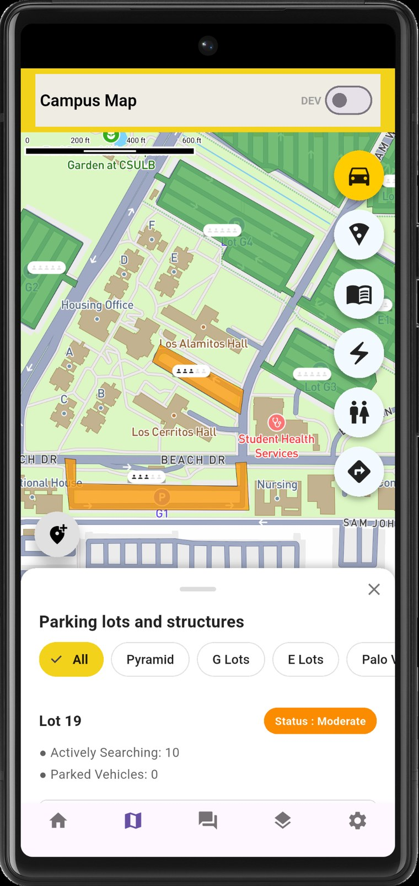

Parking difficulty, without any sensors
CSULB has no per-space sensor hardware, so there is no ground-truth occupancy feed to read. The workaround is to measure the students instead of the spaces: the app counts how many users are actively searching a given lot against how many have marked themselves parked, and turns that ratio into a difficulty status on the map.
It is a crowdsourced signal, not a measurement, and the UI is deliberate about saying so — a lot reads Moderate rather than claiming a space count it cannot know.
- Lot status derives from live counts of searching versus parked users, held in a
parking_lotscollection. - Filters narrow the sheet to a lot group — Pyramid, G lots, E lots, Palo Verde — instead of scrolling the whole campus.
- Parking shares one map module with food alerts, bathrooms, outlets and pins, so all five features draw from the same pin rendering and zoom behaviour.